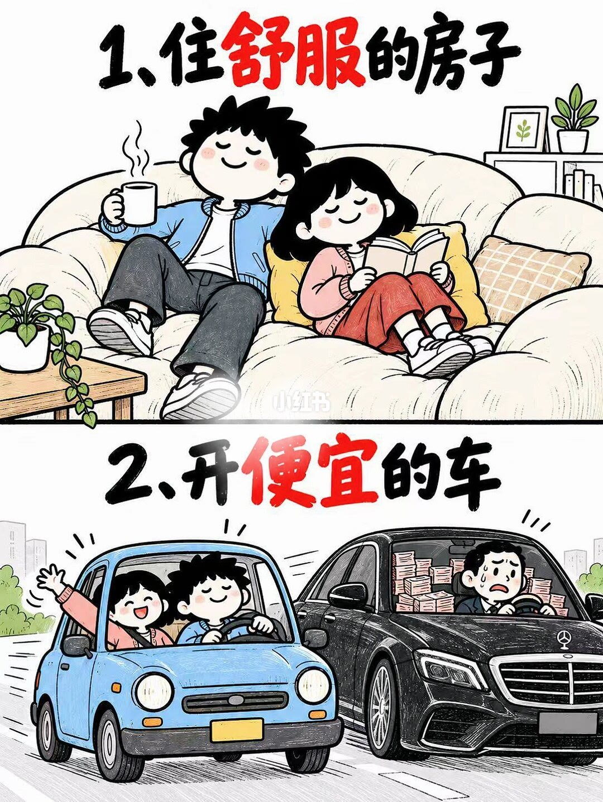
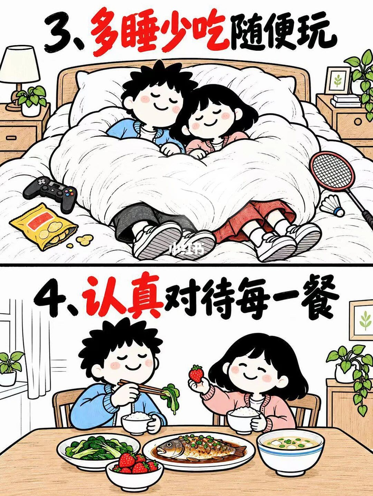
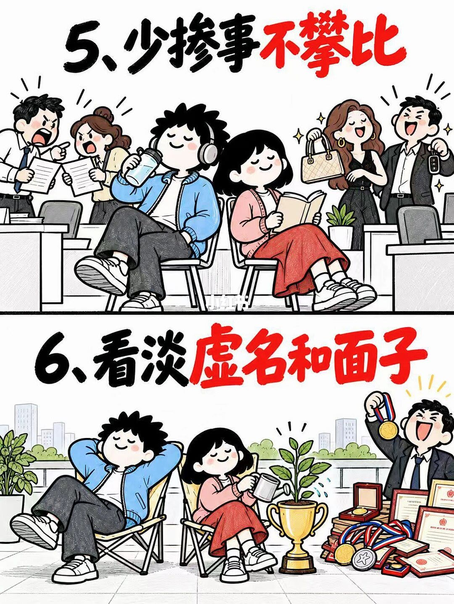
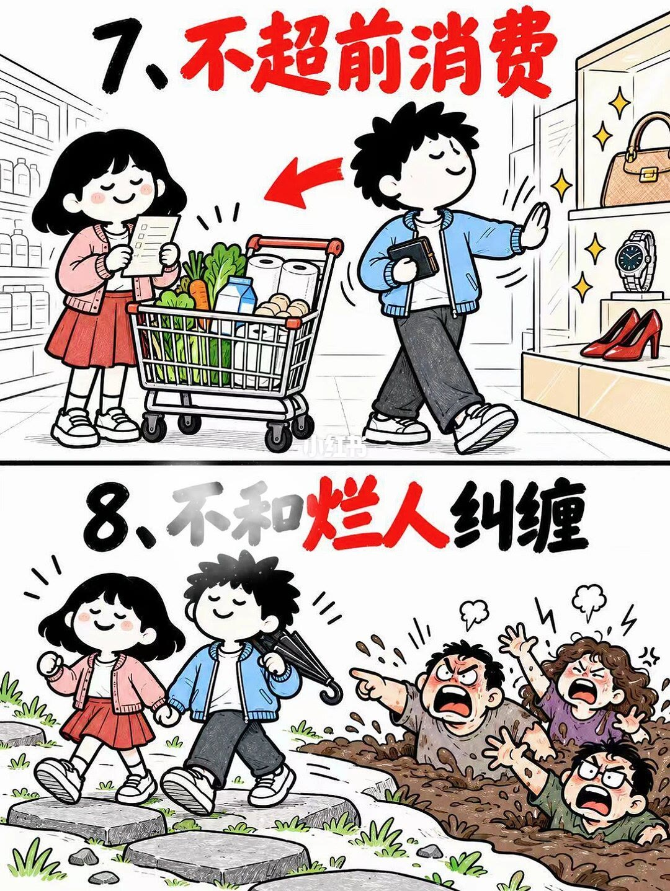
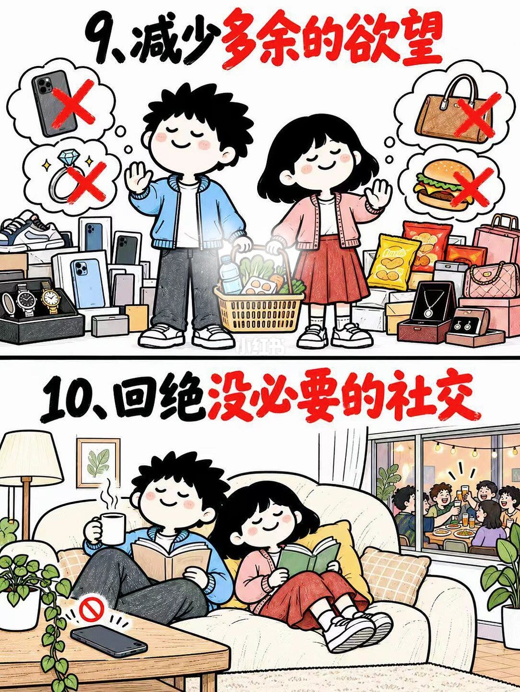
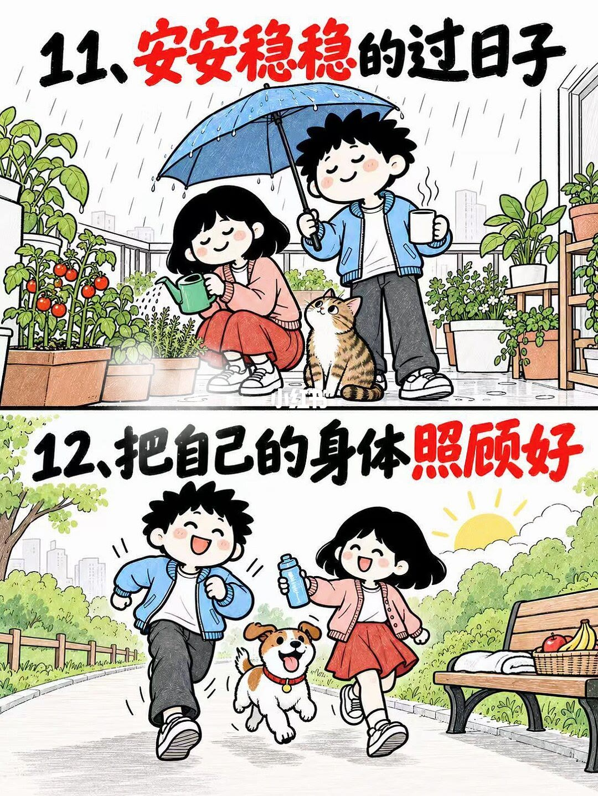

第 1 页：住舒服 · 开便宜车

1/6住舒服的房子、开便宜的车：舒适优先；豪车后座堆满钞票隐喻压力。
Comfortable home + cheap car beat status cars stuffed with money-stress.
第 1–2 条：把居住舒适与财务轻松放在外显身份之前。
第 2 页：多睡少吃 · 认真对待每一餐

2/6多睡少吃随便玩；认真对待每一餐：休息与一桌饭同权重。
Sleep more, snack lightly, play freely—and take every meal seriously.
第 3–4 条：恢复与进食质量，而不是表演忙碌。
第 3 页：少掺事 · 看淡虚名

3/6少掺事不攀比；看淡虚名和面子：灰阶争吵攀比与奖杯堆，彩色的是自得其乐。
Skip drama and comparison; treat hollow fame lightly—peace over medals.
第 5–6 条：注意力不借给办公室噪声与虚荣道具。
第 4 页：不超前消费 · 不纠缠烂人

4/6不超前消费；不和烂人纠缠：必需品购物车 vs 奢侈橱窗；干净路 vs 泥坑喊叫。
No overspending; don’t wrestle toxic people—walk the clean path.
第 7–8 条：金钱与关系上的边界。
第 5 页：减欲望 · 拒无效社交

5/6减少多余欲望；回绝没必要的社交：一篮日常对抗堆货；沙发读书背对喧闹派对。
Cut surplus desire; decline unnecessary socializing—quiet couch over loud parties.
第 9–10 条：消费与社交都做减法。
第 6 页：安稳过日子 · 照顾身体

6/6安安稳稳过日子；把自己的身体照顾好：雨天阳台浇菜；晴天跑步带狗。
Live steadily; care for the body—rainy balcony plants and sunny jogs.
第 11–12 条收束：稳定日常 + 身体可持续，才是「顶级清醒」的落地。
文末汇总
核心判断：十二条都在做减法与边界——住/车/睡/吃/社交/消费/关系/身体，把外显竞赛换成可维持的舒适。
- 每周删一件无效社交
- 大额消费先问是否换舒适
- 把睡眠和吃饭写进日程硬约束
以上为原笔记图文观点整理，不是对该主题的全面定论。